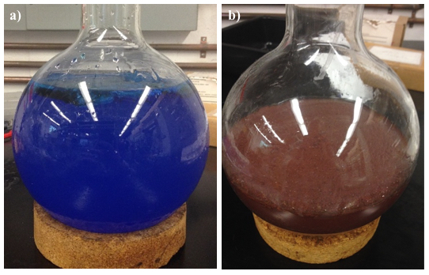
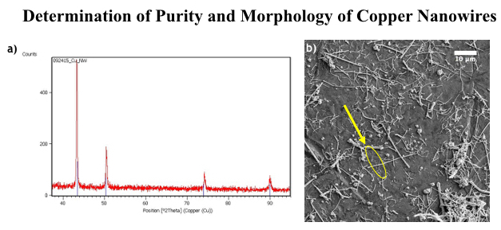
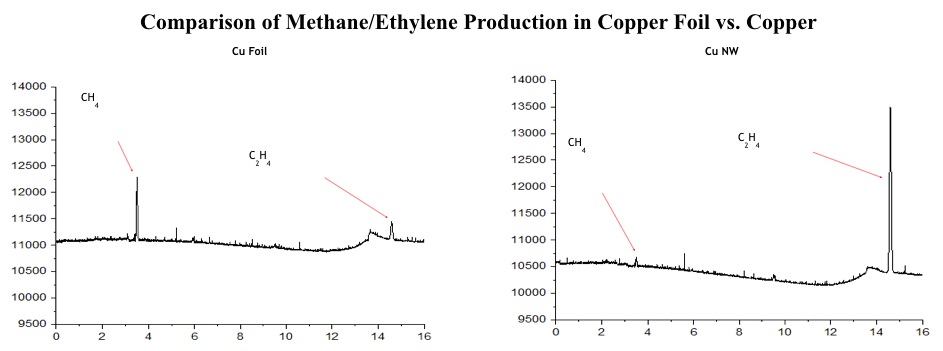

Citation: Goetjen, T. A., Calvinho, K. U. D., Laursen, A.B., & Dismukes, G. C. (2016). The Effects of Morphology on Copper as a Carbon Dioxide Reduction Catalyst. Rutgers Research Review, 1(1).
My name is Timothy Goetjen, a member of the Class of 2017 in the School of Arts and Sciences Honors Program. I am double majoring in Chemistry and Computer Science, and plan to continue my education upon graduation with a graduate program in Chemistry. I also hope to continue research in renewable energy, contributing advancing the field towards a brighter future. I started with my research in the Fall 2015 semester as an Aresty Research Assistant and am pursuing summer opportunities allowing me to continue this work.
My research is in the Department of Chemistry and Chemical Biology under the direction of Dr. Charles Dismukes and Karin Calvinho. The Dismukes Research Group has two subgroups, one that works on the biological aspects of photosystem II, and another that works with inorganic catalysts (substances that are used to increase the speed of a chemical reaction, but are not consumed) modeled after their biological counterparts. My research (in the inorganic chemistry group) specifically deals with the carbon dioxide reduction reaction on transition metal catalysts when a voltage is applied to an electrode containing that catalyst which leads to storable hydrocarbon products that can be saved for future use.
The usage of energy from renewable sources in power plants fluctuates on an hourly basis. When wind or solar power plants are producing more energy than is necessary for the grid, having a way to store the excess energy becomes key to increase efficiency and prevent instability of the electrical grid (Lemmon, 2015).
Utilizing carbon dioxide as the substrate, an electrolysis reduction reaction on a catalyst can produce hydrocarbons, which can be stored for later use as fuels. Using the excess energy from renewable energy sources to perform carbon dioxide reduction on a transition metal derived catalyst will not only synthesize hydrocarbons and thus provide a stable way of storing the energy, but also reduce dependency on fossil fuels and sequester carbon dioxide, one of the greenhouse gases. The question remains: can we find a cost effective, sustainable catalyst that will provide us the ability to reduce carbon dioxide to hydrocarbons and store them for later use?
In order to find an overall effective catalyst, one must look at what properties an effective catalyst has. They are selectivity, preferentially forming one product so that further separation steps are not necessary, high activity, so that the catalyst requires only a small excess of energy to react, and stability, so that the catalyst remains unaltered by the reaction. Since 1985, copper is known as both a highly active and stable electrocatalyst for CO2 reduction (Hori et al., 1985). It requires a potential of -1.04 V vs RHE (Reversible Hydrogen Electrode) at neutral pH to promote carbon dioxide reduction and remains unaltered after the reaction is completed. Unfortunately, copper foil is not selective, producing roughly equal amounts of methane, ethylene and hydrogen, which is where my project looks to improve, specifically the selectivity of ethylene.
Morphology of the catalyst affects the hydrocarbon product distribution in carbon dioxide reduction, and therefore, can be used to tune the catalyst selectivity. In two independent studies, copper nanoparticles and copper nanocubes were shown to significantly increase significantly the ethylene to methane ratio (Roberts et al., 2015; Tang et al., 2012). However, it is also known that the presence of chloride ions, used in both studies to create these special morphologies, can contribute to the increase in ethylene yield (Hsieh et al., 2015). In this study, we synthesized copper nanowires by a simple and scalable chloride-free method and demonstrate that even without chloride these produce higher ratios of ethylene to methane.
We synthesized copper nanowires utilizing a previously described procedure, combining NaOH, Cu(NO3), C2H8N2, N2H2 and heating the solution at mild temperatures (Rathmell et al., 2010). Copper nanowires formed as a precipitate floating on top of the solution. We recovered these by vacuum filtration and stored them in a vial.

Figure 1: (a) Deep blue color characteristic of copper (II) complexes before reaction and (b) red-brown color of the solution after the precipitation of copper(0) nanowires.
To test the electrocatalytic activity of the copper nanowires, we prepared an ink with the copper nanowires and neutralized Nafion, and placed it on a glassy carbon electrode to air dry. Prior to the reaction, a sealed electrochemical cell containing 5 mL of 0.1 M KHCO3 electrolyte was purged with carbon dioxide to saturate the solution and the headspace. Then, a potential of -1.04 V vs RHE was applied for 4500 seconds to promote CO2 reduction. To determine the efficiency of the reaction, the amount of charge used during the reaction was recorded. Gas chromatographs were taken before and after the reaction to quantify the gas-phase reaction products.
The copper nanowires (Cu NW) were characterized through Powder X-Ray Diffraction and Scanning Electron Microscopy. The diffraction pattern of the reaction product in red matches the Copper reference pattern (ICSD 64699) in blue (Fig. 2a). The Cu NWs are several micrometers long and have diameters varying from 100 nm to 700 nm (Fig. 2b).

Figure 2: (a) Powder X-Ray diffraction of the copper nanowires (red) and Copper reference pattern (blue). (b) Scanning Electron Microscopy image of the CuNW showing the high surface area and high aspect ratio of the nanocrystals.
After electrolysis, gas chromatography of the products has indicated that copper nanowires produce a significantly increased quantity of ethylene in comparison with copper foil, albeit at low Faradaic efficiencies. A significant amount of ethylene is produced with the copper nanowires, more than three times as much by the copper foil, with efficiencies of 0.49% and 1.55% respectively (Fig. 3). The low Faradaic efficiencies for hydrocarbons in these experiments were attributed to deficiencies in CO2 due to mass transport limitations. Further studies with an improved cell configurations are underway.

Figure 3: Gas chromatographs showing the hydrocarbon products of CO2 reduction performed on copper foil versus copper nanowires.
The selectivity for ethylene over methane on the Cu NWs could be explained by the morphology of the catalyst. Roughened surfaces of the catalyst contain more low-coordination sites (i.e. steps or edges) which are more active in carbon dioxide reduction reactions (Hori et al., 2002; Tang et al., 2012). Hori et al. observed that single-crystal copper with many steps (higher index surfaces) e.g., Cu(311), Cu(511), and Cu(711), show high selectivity towards ethylene, with efficiencies of 51.6% for ethylene and only 3.8% for methane. An alternative hypothesis to explain the selectivity is that the roughness of the catalyst causes an increase in local pH that shifts the selectivity towards ethylene, because higher pH limits the availability of protons needed for the side reaction of hydrogen evolution and the higher hydrogen containing methane, thus increasing the relative ethylene production.
Ultimately, the studies of efficiency of copper nanowires may lead to the development of a cost effective, stable, and reliable catalyst for carbon dioxide reduction that can be implemented at an industrial scale. The consequences of this would decrease dependence on, and use of, fossil fuels and other non-renewable resources and be the beginning of cleaner and storable energy.
References
- Hori, Y., Kikuchi, K., & Suzuki, S. (1985). Production of CO and CH4 in electrochemical reduction of CO2 at metal electrodes in aqueous hydrogencarbonate solution. Chem. Lett., (11), 1695–1698. DOI: 10.1246/cl.1985.1695
- Hori, Y., Takahashi, I., Koga, O., & Hoshi, N. (2002). Selective formation of C2 compounds from electrochemical reduction of CO2 at a series of copper single crystal electrodes. J. Phys. Chem. B, 106(1), 15–17. DOI: 10.1021/jp013478d
- Hsieh, Y., Senanayake, S. D., Zhang, Y., Xu, W., & Polyansky, D. E. (2015). Effect of Chloride Anions on the Synthesis and Enhanced Catalytic Activity of Silver Nanocoral Electrodes for CO 2 Electroreduction. ACS Catal., 5(9), 5349–5356. DOI: 10.1021/acscatal.5b01235
- Lemmon, J. P. (2015). Reimagine fuel cells. Nature, 525, 447.
- Rathmell, A. R., Bergin, S. M., Hua, Y. L., Li, Z. Y., & Wiley, B. J. (2010). The growth mechanism of copper nanowires and their properties in flexible, transparent conducting films. Adv. Mater., 22(32), 3558–3563. DOI: 10.1002/adma.201000775
- Roberts, F. S., Kuhl, K. P., & Nilsson, A. (2015). High Selectivity for Ethylene from Carbon Dioxide Reduction over Copper Nanocube Electrocatalysts. Angew. Chem., 127, 5268–5271. DOI: 10.1002/ange.201412214
- Tang, W., Peterson, A. a., Varela, A. S., Jovanov, Z. P., Bech, L., Durand, W. J., … Chorkendorff, I. (2012). The importance of surface morphology in controlling the selectivity of polycrystalline copper for CO2 electroreduction. Phys. Chem. Chem. Phys., 14(1), 76. DOI: 10.1039/c1cp22700a